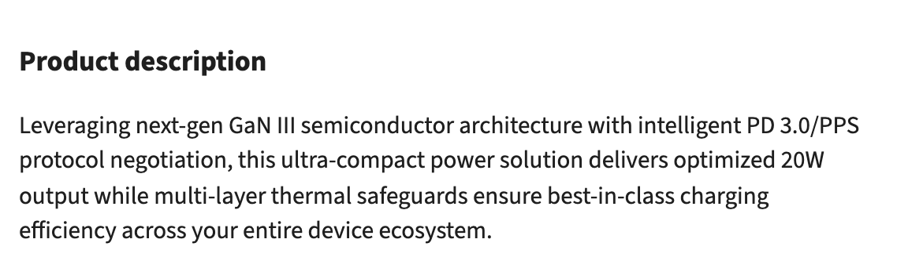
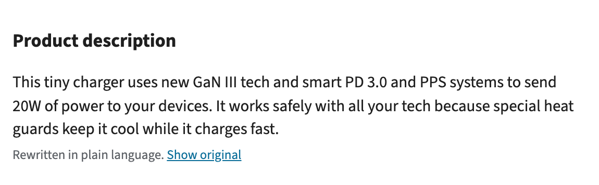
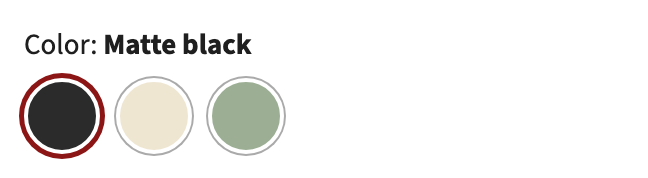

Example adapters
We wrote these three adapters for Redbird. Each one fixes one problem on the store, for a different group of shoppers.
| Adapter | Who it's for | What it fixes |
|---|---|---|
| reading-level | People with cognitive or reading disabilities | Long, wordy product descriptions |
| pause-moving-things | People with ADHD or anxiety, and people who get dizzy from motion | Parts of the page that move by themselves |
| swatch-names | Blind and low-vision shoppers | Color choices a screen reader can't name |
See the problem opens the store with the adapter off, and See the fix opens it with the adapter on. Edit a copy opens the adapter in the panel's Build your adapter tab, under Details, where you can change its code.
reading-level
Who it's for: people with cognitive or reading disabilities, like Dario.
The problem: the product descriptions are long sentences full of marketing words.
What it does: it finds the paragraphs that are harder than the person's reading level, and asks AI to rewrite them in short, plain sentences. A Show original link under each one brings back the store's text. If your adapter needs AI, look at how this one asks AI to rewrite the text.


See the problem (opens in a new tab) See the fix (opens in a new tab) Edit a copy (opens in a new tab) Read the code (opens in a new tab)
pause-moving-things
Who it's for: people with ADHD or anxiety like Mark, and people who get dizzy from motion.
The problem: parts of the store move by themselves. A deals bar scrolls across the top of every page, the home page banner changes every 4 seconds, the product rows slide along, and a product video starts playing on its own.
What it does: it holds all of them still, without hiding anything. With it on:
- The deals bar under the menu stops scrolling.
- On the home page, the banner stays on one picture and the product rows stop sliding.
- On a product page, the video stays paused, with a play button.
The person can still move things themselves. The banner's arrows, scrolling a row and the video's play button all still work.
See the problem (opens in a new tab) See the fix (opens in a new tab) Edit a copy (opens in a new tab) Read the code (opens in a new tab)
swatch-names
Who it's for: blind and low-vision shoppers, like Sam.
The problem: the colors on a product page are plain circles, so a screen reader can't say which color you're picking, and the keyboard skips them.
What it does: it gives each circle the name of the closest color, like "sage green", and lets the arrow keys pick one.

The circles look the same with the adapter on, but a screen reader can now say their names:
"Color: Matte black", and nothing for the three circles.
"Color: Matte black", then three choices: black (picked), cream and sage green.
See the problem (opens in a new tab) See the fix (opens in a new tab) Edit a copy (opens in a new tab) Read the code (opens in a new tab)
Your own adapters
The adapters you build in the Build your adapter tab are listed under these three in the panel's Adapter Library tab, each with its own switch. Only one of them runs at a time, so turning one on turns off the one that was on.